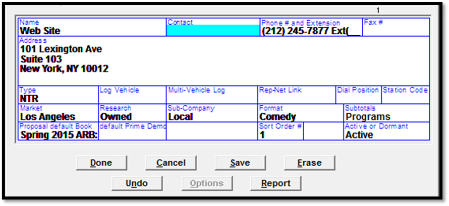
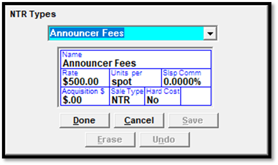

NTR Setup
Site Options
On the Traffic Site Options screen, Options tab, in the System Options setting, the NTR checkbox is used to enable or disable the NTR feature. To enable this feature, contact: support@counterpoint.net.
The NTR invoice options are set in Traffic Site Options on the Invoice tab.
Combine Commercial and NTR: This will combine NTR dollars and broadcast dollars on one invoice. If using Installment Billing, this option is automatically activated.
NTR Tax: Allows NTR items to be taxed.
Vehicle Options
NTR type vehicles have no inventory. Typical NTR vehicles are Web, Live Reads, Talent, and Various Fees.
To create an NTR type vehicle, when creating a new vehicle, set the Type to NTR.

Lists -> NTR Types
On the Lists screen, the NTR Types screen (shown below) is used to define the different types of NTR that will be used, such as affiliate fees, announcer fees, remotes, satellite leases, talent fees, etc.

Name: The name of the type or category of NTR. This can be any type of non-traditional, non-air time revenue.
Rate: This is optional. If entered, it will be the default rate when adding this NTR type to a contract.
Units Per: This is a text entry field that is used to set how these items will be bought, such as by spot or by impressions. This appears as an information only field on the contract screen, and on the printed contract report.
Salesperson Commission: The salesperson commission is optional. If filled in, it will be the default when entering the order information.
Acquisition Dollars: When entered, this sets the default Acquisition Cost on the NTR screen on the contract.
Sales Type: This is used on reports that have selectivity by Sales Origin, such as the Invoice Register and the Billed and Booked Recap. The Sales Type options are: NTR, Agency or Direct. Any NTR item that has the type Direct or Agency will be included with the air time revenue for those categories and not broken out separately.
Hard Cost: If the item is a Hard Cost item, select Yes. The Hard Cost (Pass Through Billing) feature allows you to pass the cost of an item for a buy to the agency from another group. It allows you to track the cost of the items, send the invoice to the agency or buyer and pass the cash on for whatever arrangement was made for the buy. Note: hard cost items are only selectable on 100% cash contracts (in other words, they are excluded from trade contracts).
Taxable: This can be set to Yes or No, and determines the default value when entering the NTR item on a contract. It’s only available when “NTR Tax” is enabled in Traffic Site Options.